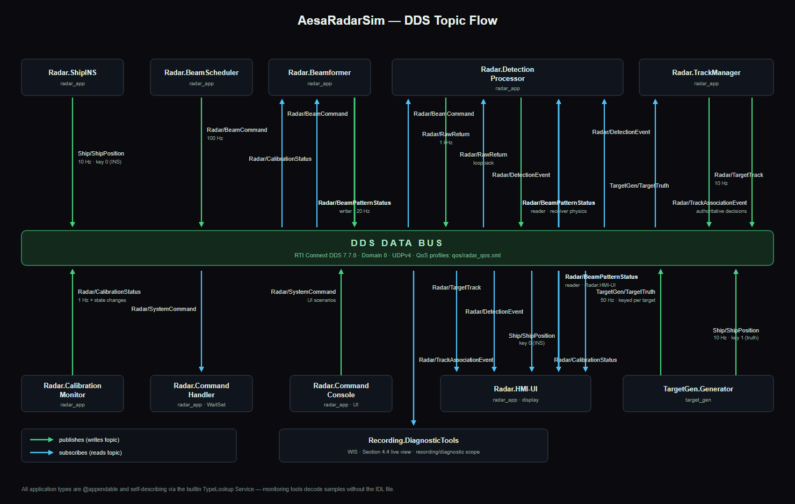

AESA Radar Simulation Presentation Playbook
This is the speaker and operator playbook for presenting the DDS-based S-band AESA radar simulation to fellow Field Application Engineers. The audience is technically strong, and some are electrical engineers, but they are not expected to be RF or radar specialists. Treat DDS and data-centric design as shared context rather than spending time selling their general benefits.
Opening and acknowledgments
Opening script
Before I begin, I want to thank my manager, Dave, and my fellow FAEs Paul S. and Matt M. Their feedback during the preliminary simulator demonstrations materially improved both the simulation and today's presentation.
Then set the scope:
This is a representative, unclassified S-band AESA simulation. It is broadly inspired by the modular architecture publicly described for the AN/SPY-6 family, but it is not a performance model, certified operator interface, or reproduction of classified radar parameters. I will use it to connect beam formation, receiver data, detection, tracking, and DDS system visibility in one live system.
Presentation thesis
We will follow information from an electronically steered aperture, through complex receiver samples and detections, into tracks, and finally inspect that live dataflow from outside the application.
The run of show is:
- Explain AESA operation without assuming RF expertise.
- Establish the representative radar assumptions and the AN/SPY-6 boundary.
- Walk through the DDS dataflow architecture.
- Start with two targets so the display remains understandable.
- Explain the native radar panels.
- Demonstrate sector focus, track loss, and face-handoff reacquisition.
- Load 32 random targets and demonstrate progressive RMA outages.
- Move to Connext Studio for live system and topic visibility.
- Close with what Studio and the browser workaround can and cannot answer.
Preflight and reset point
Perform these steps before the audience joins.
- Close stale
radar_app,target_gen,target_control, and WIS processes. - Start Connext Studio and prepare domain 92, but do not rely on it to recover events that occurred before its subscriptions existed.
- From the cloned repository root, launch the simulation with two targets:
scripts\windows\start-all.cmd -Domain 92 -Targets 2The startup target set is one deterministic fighter on the 12 km orbit plus one randomized target. It is not two random targets.
- Confirm all four faces are online, array health is nominal, and the radar is in Search Mode.
- Set the PPI range so both targets are easy to see.
- Keep the target-control application available for the later 32-target transition.
- Do not start the RMA outage WIS view until its presentation step unless the additional participant is intentionally part of the opening topology.
The recovery baseline throughout the presentation is:
SEARCH MODE
ALL ONLINE on each affected face
RESTORE ARRAY if sparse element degradation was injected1. How an AESA radar works
Start with the aperture
An active electronically scanned array contains many transmit/receive elements. Each element contributes a small part of the radiated field. The relative phase across the elements causes those contributions to add constructively in one direction and partially cancel elsewhere.
element phase progression -> beam direction
active aperture geometry -> gain, beamwidth, boresight, and sidelobesThere is no mechanically rotating antenna in the four-face configuration. The scheduler changes phase commands to move the beam electronically from one dwell to the next.
Explain the pattern vocabulary
- Main lobe: the intended direction of maximum response.
- Boresight: the actual main-lobe center. Calibration errors or asymmetric outages can move it away from the commanded direction.
- 3 dB beamwidth: the angular width between the half-power points.
- Sidelobes: unwanted response away from the main lobe.
- Peak sidelobe level, or PSL: the strongest sidelobe relative to the active main-lobe peak. A value closer to zero is worse.
Use the RMA concept as the bridge to the outage demonstration:
Rather than treating the face as one indivisible antenna, the simulation groups elements into Radar Modular Assemblies. Removing an RMA changes both the available aperture and its spatial shape. The number removed affects sensitivity, while the locations removed affect beam shape and pointing.
Follow one observation through the radar
- The scheduler issues a beam pointing and dwell identifier.
- The beamformer calculates the outage-aware array response.
- The receiver produces complex I/Q range cells for each pulse.
- Ten pulses are noncoherently integrated into one dwell magnitude trace.
- Threshold crossings become DetectionEvents.
- Spatially consistent detections from independent scan visits become a TargetTrack.
A detection is one observation. A track is a filtered estimate built from repeated observations. A displayed blip is not automatically a track.
2. Radar assumptions and the AN/SPY-6 boundary
The model uses public, representative values to keep its geometry, timing, and receiver math internally consistent.
| Assumption | Simulator value | Interpretation |
|---|---|---|
| Carrier | 3.0 GHz | Representative S-band value |
| Wavelength | 0.09993 m | Approximately 10 cm |
| Element pitch | 0.050 m | Approximately half wavelength |
| Elements per face | 32 × 32 = 1,024 | One modeled planar aperture |
| RMAs per face | 4 × 4 = 16 | Each RMA contains 8 × 8 = 64 elements |
| Fixed faces | 4 | Four concurrent 90-degree quadrants |
| Waveform bandwidth | 1 MHz | Approximately 149.9 m range resolution |
| PRF | 1 kHz | Approximately 149.9 km unambiguous range |
| Instrumented range | 100 km | Below the modeled unambiguous range |
| Pulse width | 20 microseconds | Approximately 3 km full-pulse receive limit |
| Pulses per dwell | 10 | 10 ms dwell at 1 kHz PRF |
| Azimuth centers per face | 40 | 2.25-degree raster spacing |
| Elevation bar centers | 3, 14, and 25 degrees | Coarse simulation labels, not SPY-6 data |
The four face identifiers are:
| ID | Face | Nominal field of regard |
|---|---|---|
| 0 | Forward Starboard | 0–90 degrees |
| 1 | Aft Starboard | 90–180 degrees |
| 2 | Aft Port | 180–270 degrees |
| 3 | Forward Port | 270–360 degrees |
Each face advances at 100 dwells per second. Forty azimuth pointings therefore take 0.4 seconds for one elevation bar. Three bars produce a 1.2-second face-volume cycle. All four faces operate concurrently, producing 400 BeamCommands per second in aggregate.
What is and is not modeled after AN/SPY-6
Public descriptions support the comparison at the architectural level:
- S-band AESA operation
- modular Radar Modular Assemblies
- scalable fixed-face configurations
- electronic beam steering
- graceful degradation through modular redundancy
- simultaneous surveillance, tracking, and air/missile-defense missions
Do not imply equivalence of size or performance. AN/SPY-6(V)1 is publicly described as four fixed faces with 37 RMAs per face. This simulator uses only 16 modeled RMAs per face and its RF/search values are demonstration assumptions.
The DetectionEvent elevation is one of three 11-degree bar-center labels. The simulator does not calculate a two-dimensional elevation array factor or continuous elevation estimate. No authoritative public AN/SPY-6 elevation quantization value was used. The three-bar model is intentionally coarse.
For the complete assumptions reference, open docs/radar_constants_and_assumptions.html.
3. DDS dataflow architecture
Show the architecture diagram before opening the native radar panels.

Do not spend time introducing data-centric design as a new idea. Instead, orient the audience to the concrete dataflow.
Walk from left to right
TargetGen.GeneratorpublishesTargetGen/TargetTruthat 50 Hz.Radar.CommandConsolepublishes operatorRadar/SystemCommandsamples.Radar.CommandHandlerapplies mode, sector, reset, and array commands.Radar.BeamSchedulerpublishes one keyedRadar/BeamCommandstream for each face.Radar.CalibrationMonitorpublishes keyedRadar/CalibrationStatus.Radar.Beamformercombines commands and calibration state intoRadar/BeamPatternStatus.Radar.DetectionProcessorsynthesizesRadar/RawReturn, integrates each dwell, and publishesRadar/DetectionEvent.Radar.TrackManagerassociates detections and publishesRadar/TargetTrackplus authoritative association events.Radar.ShipINSpublishes own-ship position and motion.Radar.HMI-UIsubscribes to the operational topics and renders the live dashboard.
Point out the DDS concepts in context
- Face identifiers are bounded DDS keys; incrementing beam and detection IDs are data fields rather than unbounded keys.
- TypeLookup lets Studio decode application types without manually importing IDL in the normal demonstration.
- Volatile commands must be observed live. Transient-local state topics can provide the latest keyed state to late joiners.
- Different QoS policies express whether a stream is command/state data or a high-rate best-effort observation.
Optional deeper path if the audience asks:
BeamCommand + CalibrationStatus
-> BeamPatternStatus
-> RawReturn I/Q
-> integrated magnitude
-> DetectionEvent
-> association/fusion
-> TargetTrack4. Start with two targets
Return to the native radar display. Keep the scene deliberately sparse.
What the audience should see
- One fighter remains on the deterministic 12 km orbit at the modeled 14-degree elevation bar.
- One randomized target follows its generated profile.
- Four independent sweep arms cover the four fixed faces.
- Individual detection blips appear before or between stable track updates.
- Track IDs are assigned by the tracker and are unrelated to target truth IDs.
Narration
I am starting with only two targets so we can connect beam visits, detections, and track behavior without hiding the mechanism in a dense display. Later I will deliberately replace this with 32 random targets to make aperture degradation statistically visible.
Use the orbiting fighter as the persistent reference contact for the panel tour and sector demonstration.
5. Explain the radar panels
PPI — geographic situation
- North-up, 360-degree view centered on own ship.
- Sweep and detection bearings are converted to true/world bearing.
- Glowing circles are recent detections; color indicates reported signal strength, not hostility.
- Cyan diamonds and trails are TargetTracks.
- The thin line from a track is its estimated 60-second velocity vector, not a radar beam.
B-scope — range versus relative azimuth
- Horizontal position is ship-relative bearing; vertical position is range.
- Recent detections accumulate on independent face phosphor planes.
- The selected face shows commanded and effective beam centers.
- During RMA outages it exposes main-lobe displacement, width changes, and dominant sidelobe structure.
A-scope — receiver magnitude versus range
- Displays the current integrated range trace for the selected face and beam.
- The noise floor remains visible even without a target.
- Peaks above the fixed threshold can become detections.
- An all-offline face still publishes thermal-noise RawReturns, but target gain is zero and no target detections are produced.
Target Tracks
- Lists tracker-generated identity, classification, range, bearing, speed, and quality.
- A track is confirmed only after spatially consistent independent scan visits.
- IDs may change after a sufficiently long loss and reacquisition.
Beam Schedule
- Shows live azimuth and elevation commands for the selected face.
- Full search uses a repeating 40-point azimuth sweep.
- Sector mode reverses through thirteen azimuth centers while cycling the three elevation labels.
System Health
- Summarizes CalibrationStatus for the selected face.
- Shows nominal/degraded/offline state, failed-element count, temperature, and the RMA mask.
Array Face
- Displays the selected 32 × 32 element aperture.
- Each outlined 8 × 8 block is one RMA.
- Clicking an RMA toggles that block offline or online on the selected face.
- Element and block colors describe gain health, not target state.
Ship Position and scenario controls
- Ship Position exposes navigation and attitude information.
- Search/Sector, Reset, Degrade/Restore, RMA, and whole-face controls publish SystemCommands rather than directly mutating every consumer.
Close the panel tour with:
The panels are different views of successive stages: present receiver data, extracted detections, geographic history, and the tracker's state estimate.
6. Sector scan, loss, and face-handoff reacquisition
Keep the 12 km fighter orbit visible and select the face it currently occupies.
Establish the baseline
- Confirm Search Mode.
- Point out the full 90-degree face sweep.
- Identify the fighter's current track ID.
- Note that a full one-way azimuth sweep contains 40 centers and takes 0.4 seconds for the current elevation bar.
Activate sector scan
Press SECTOR SCAN on the selected face.
The selected face now scans thirteen centers spanning 31.5 through 58.5 degrees around its nominal 45-degree boresight. It reverses direction without repeating the endpoint. One one-way leg takes approximately 0.12 seconds, so a complete out-and-back triangle takes approximately 0.24 seconds.
We traded coverage for revisit rate. The radar is spending more of this face's time in a narrow priority sector, while the other three faces retain their normal search schedules.
Observe the track lifecycle
- The orbiting fighter receives frequent updates while inside the sector.
- After it exits the sector, new detections stop and the existing track coasts on its predicted state.
- If the gap exceeds the track lifecycle limit, that track is disposed.
- When the fighter crosses into the next physical face, that face's full search can detect it again.
- Repeated observations initiate and confirm a new track with a new track ID.
The changed ID is tracker lifecycle identity. It does not imply that the physical target changed; the radar lost continuity and initiated a new track.
Restore SEARCH MODE before continuing.
Repeat the scheduling evidence later in Studio
When the presentation reaches Studio, repeat the Search/Sector transition on Radar/BeamCommand.azimuth_deg. The Time Chart makes the geometry visually obvious: full-face search is a sawtooth, while the selected sector is a faster-reversing triangular trace. Do not describe BeamCommand.mode as the differentiator; both use BEAM_MODE_SEARCH. Azimuth span and priority carry the evidence.
7. Progressive RMA outage demonstration
The objective is to separate three effects:
- fewer active elements reduce target-return amplitude;
- outage position changes the aperture shape and beam pattern; and
- reduced or ambiguous response lowers acquisition yield.
Replace the two-target scene with 32 random targets
In Target Control:
- Choose CLEAR ALL and confirm.
- Select Random Fleet.
- Set the count to 32.
- Choose ADD.
This creates exactly 32 random targets. In contrast, target_gen --targets 32 creates one 12 km orbit plus 31 random targets.
Allow the radar picture and tracks to stabilize.
Start the multi-topic RMA monitor
From a Command Prompt opened at the cloned repository root:
scripts\windows\multi_topic_live_views\start-wis-rma-impact.cmdOpen:
http://localhost:18080/multi_topic_live_views/rma_outage_impact_live_view.htmlSelect Connect live and wait at least 15 seconds before the first outage. That gives the selected incident evidence a complete pre-transition baseline.
The browser is a Web Integration Service client, not a Connext Studio multi-topic view. It subscribes to five topics:
Radar/SystemCommandRadar/CalibrationStatusRadar/BeamPatternStatusRadar/BeamCommandRadar/DetectionEvent
Explain the current monitor
The Current Face State table shows:
- hexadecimal RMA mask and authoritative health;
- offline RMA and active-element counts;
- gain loss relative to all 1,024 elements;
- azimuth beamwidth and boresight error;
- PSL relative to the active main-lobe peak;
- rolling detection yield and median reported S/N.
The 4 × 16 mask display is four faces by sixteen mask bits. It is not a physical 4 × 4 aperture drawing. Red cells are offline RMAs. The physical row-major numbering is:
0 1 2 3
4 5 6 7
8 9 10 11
12 13 14 15The Selected Incident Evidence panel treats CalibrationStatus mask changes as authoritative. A preceding SystemCommand is only supporting evidence of the request.
Remove RMAs progressively
Keep one face selected—Forward Starboard is easiest to narrate—and remove one block at a time.
For every step, move through the same evidence chain:
red RMA block
-> CalibrationStatus mask and active-element count
-> BeamPatternStatus gain/width/boresight/PSL
-> B-scope beam shape
-> DetectionEvent yield and S/N
-> fewer or delayed track acquisitionsSuggested progression:
- Remove one corner or edge RMA for a small, asymmetric change.
- Continue through
0, 1, 4, 5, 8, 9, 12, 13to remove the left half (0x3333). Half the elements remain; gain is approximately -6.02 dB, beamwidth grows to about 6.35 degrees, and modeled boresight moves about +1.44 degrees. Relative PSL remains near -13 dB because the remaining aperture is still a contiguous uniform half-aperture. - If time permits, restore and remove the middle two RMA columns
1, 2, 5, 6, 9, 10, 13, 14(0x6666). The mask is bilaterally symmetric, so boresight remains near zero, but the separated edge subarrays create very strong ambiguity lobes. The main lobe can become narrower while the overall discrimination becomes much worse. - Use ALL OFFLINE for the dramatic endpoint: active target gain becomes zero, detections disappear, and the A-scope retains only thermal noise.
- Use ALL ONLINE and allow detections and tracks to recover.
Do not promise that every intermediate click causes a monotonic PSL or beamwidth change. Aperture geometry matters. Also do not call yield a probability of detection; it is DetectionEvents divided by search BeamCommands and can exceed one when several targets are detected in a dwell.
8. Connext Studio live system visibility
Move from the native display to Connext Studio only after the audience understands the radar behavior.
System Visualization
Connect Studio to domain 92 and orient the audience to:
- discovered participants;
- DataWriters and DataReaders;
- topic and type names;
- matched endpoints;
- keys and live instances;
- reliability, durability, history, and other QoS policies.
Point out the application boundaries instead of treating the system as one process. If the RMA browser view is running, its single WIS participant is an external observer of the five topics configured for that page.
BeamCommand Time Chart
Create a Data Visualization for the single topic Radar/BeamCommand:
- Select
azimuth_degas the numeric Y field. - Keep all four
scheduler_idkeyed instances visible. - Use scheduler ID to identify the series; do not plot the ID itself as a Y value.
- Use a window of roughly 15 seconds.
- Repeat Search Mode and Sector Scan while the chart is subscribed.
The expected traces are:
| Scheduler ID | Face | Full-search azimuth centers |
|---|---|---|
| 0 | Forward Starboard | 1.125–88.875 degrees |
| 1 | Aft Starboard | 91.125–178.875 degrees |
| 2 | Aft Port | 181.125–268.875 degrees |
| 3 | Forward Port | 271.125–358.875 degrees |
The selected sector trace becomes a triangle because it scans out and back. In a 0.4-second interval, approximately three and one-third one-way sector legs occur, or one and two-thirds complete out-and-back triangles.
Pause the chart at a visually clean moment if a static snapshot is easier to explain, but remember that the underlying question had to be observed while the subscription was live.
Useful single-topic views
Radar/SystemCommand: command audit and target-face maskRadar/CalibrationStatus: keyed health, mask, and element driftRadar/BeamPatternStatus: scalar beam consequences and pattern sequenceRadar/DetectionEvent: live detection range, bearing, amplitude, and S/NRadar/TargetTrack: keyed track lifecycles and current state
Several views may be open simultaneously, but each Studio visualization is restricted to one topic.
9. Live observability, limitations, and the WIS workaround
This section is the conclusion of the demonstration rather than another radar scenario.
What Studio can answer
While the system is live and the appropriate reader exists, Studio can answer:
- What participants and endpoints exist now?
- Which DataWriters and DataReaders match?
- What types, keys, instances, rates, and QoS policies are visible?
- What values and transitions are arriving on one selected topic?
- How does a live field change when an operator repeats an action?
What Studio cannot answer retrospectively
Connext Studio monitors a live system. It is not a recorder or replay engine. It cannot reconstruct a volatile command, transition, or scenario that finished before the relevant subscription existed. Pausing a chart preserves what that view already received; it does not retrieve earlier history from the system.
Studio helps me ask questions of the system that is running now. It cannot answer a question about a transient event that I did not subscribe to or record when it happened.
For that reason:
- Create the view before activating the scenario.
- Repeat an action when necessary instead of implying that Studio recovered it retrospectively.
- Use a recording/replay product when historical investigation is a requirement.
Single-topic boundary
Studio currently restricts a visualization view to one DDS topic. Multi-topic subscriptions were implemented in Admin Console through substantially more complex machinery, but they are not currently exposed as equivalent Studio visualizations.
Therefore, do not promise a Studio chart that directly joins SystemCommand, CalibrationStatus, BeamPatternStatus, BeamCommand, and DetectionEvent.
The supported approaches are:
- open separate Studio views and move between them; or
- use a purpose-built WIS browser application that subscribes to several topics and performs the correlation itself.
What the RMA browser proves
The RMA Outage Impact Monitor demonstrates the second approach. It is an external DDS application delivered through Web Integration Service. It observes five topics, correlates mask transitions with pattern and detection evidence, and renders a task-specific view in a browser.
It remains subject to live-observation boundaries:
- connect before the transition;
- its retained evidence is browser-local;
- refreshing the page clears that browser state;
- it does not prove that RawReturn stopped because it does not subscribe to the I/Q stream;
- correlation logic belongs to that browser application, not to Studio.
DDS exposes the state and relationships needed to build operationally useful views, but the observer still needs the correct subscriptions, time window, and authority boundaries. Visibility is powerful only when we are precise about what was actually observed.
Closing
Return to the full radar display with all faces restored and Search Mode active.
Closing summary
We started with element phase and aperture geometry, followed one beam into I/Q, detections, and tracks, changed the scheduler with a priority sector, degraded the aperture by removing modular assemblies, and then inspected the same live system through DDS tooling. The simulation is intentionally simplified, but the causal chain is explicit and observable.
Thank Dave, Paul S., and Matt M. again if they are present, then open Q&A.
Q&A calculation and terminology cheat sheet
Coordinate frame
x = East
y = North
z = Up
azimuth = atan2(x_east, y_north)Target voltage
A = K * f_active * P(offset) * sqrt(RCS_linear) / R^2
RCS_linear = 10^(RCS_dBsm / 10)
sqrt(RCS_linear) = 10^(RCS_dBsm / 20)f_activeis the active element fraction and equals 1 only for a healthy full aperture.P(offset)is the normalized voltage response at the target's angular offset. It equals 1 only at the effective pattern peak.- A 10 dB RCS increase means 10 times linear RCS, 3.162 times voltage amplitude, and approximately 1.778 times threshold-crossing range.
Carrier phase
Carrier phase is deterministic, not randomly selected:
phi = (4*pi*R / wavelength) modulo 2*piThe target slant range is doubled for the outbound-and-return path. At 3 GHz, the phase repeats after approximately half a wavelength, or 4.997 cm of slant range change.
Complex noise and displayed S/N
N_I, N_Q ~ Gaussian(0, 0.05^2)
complex-noise RMS = sqrt(0.05^2 + 0.05^2) = 0.07071
reported S/N = 20*log10(M / 0.07071)The factor 20 is used because M/0.07071 is a voltage-like amplitude ratio. This is equivalent to applying 10*log10 to the squared power ratio. The displayed value is integrated magnitude relative to complex-noise RMS, not a rigorous signal-only SNR estimator.
Elevation
The true geometric target elevation is used only for the receive gate:
elevation_true = atan2(z, sqrt(x^2 + y^2))DetectionEvent reports the illuminating bar center—3, 14, or 25 degrees—not the continuous truth angle. Each bar represents an 11-degree interval with modeled standard deviation 11/sqrt(12) = 3.175 degrees.